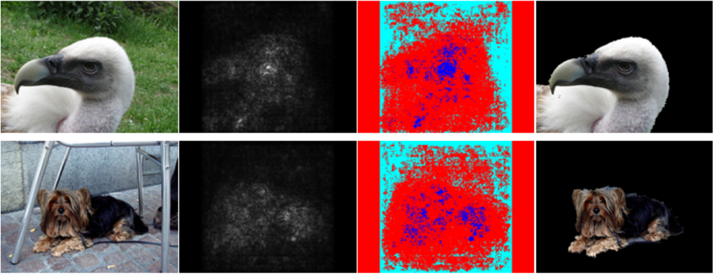
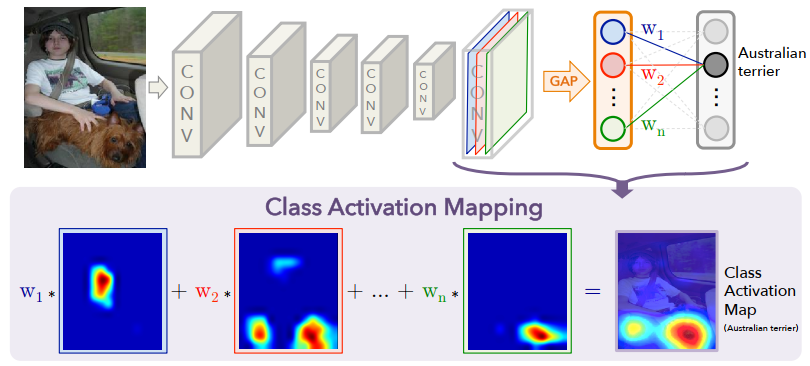
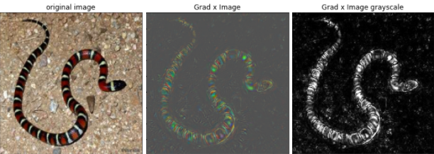
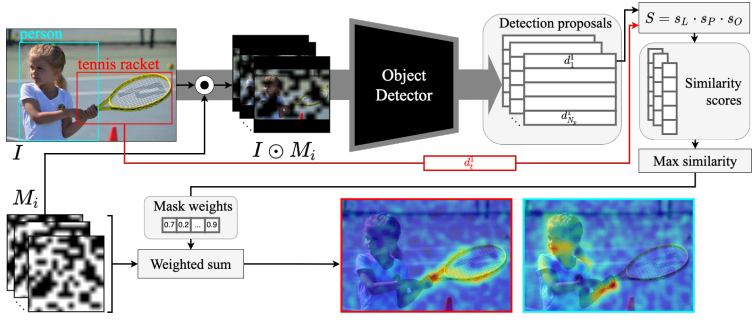

Saliency Maps
Introduction
Understanding the inner workings of deep neural networks (DNNs) is crucial for improving their performance and interpretability. In recent years, the development of visualization techniques, particularly saliency maps, has provided insights into how DNNs make decisions. Saliency maps highlight regions of input data that contribute most to the network's output, offering valuable interpretability in various applications, particularly in computer vision tasks.
Visualization techniques
Saliency maps aim to uncover the features and patterns in input data that drive the decisions made by DNNs. These maps provide visual explanations, aiding in understanding model behavior and improving trust in automated systems. Through techniques such as Deconvolutional Network Approach, Gradient-Based Approach, Guided Backpropagation Algorithm, Class Activation Mapping (CAM), Grad-CAM, Guided Grad-CAM, SmoothGrad, Grad x Image, and D-RISE, researchers have made significant strides in enhancing the interpretability of DNNs.
| Method | Description | Link |
|---|---|---|
| Deconvolutional Network Approach | Utilizes a multi-layered Deconvolutional Network to project feature activations back to the input pixel space. | Paper |
| Gradient-Based Approach (Vanilla) | Generates image-specific class saliency maps using back-propagation through a classification ConvNet. | Paper |
| Guided Backpropagation Algorithm | Performs a backward pass of activations to visualize the part of an image that activates a given neuron. | Paper |
| Class Activation Mapping (CAM) Approach | Highlights discriminative image regions used by a CNN to identify specific categories. | Paper |
| Grad-CAM | Utilizes gradients of a target concept flowing into the final convolutional layer to produce a coarse localization map. | Paper |
| Guided Grad-CAM | Extends Grad-CAM by combining fine-grained visualization techniques with its coarse-grained output. | Paper |
| SmoothGrad | Smooths sensitivity maps based on raw gradients using a Gaussian kernel to reduce noise. | Paper |
| Grad x Image | Produces saliency maps by taking the element-wise product of the input image and the gradient. | Paper |
| D-RISE | A black-box attribution technique for explaining object detectors via saliency maps, using input masking. | Paper |
Problem Definition
Convolutional Neural Networks (CNNs) have become indispensable in computer vision, shining in tasks like CIFAR-10 and ImageNet 2012 classification. Yet, unraveling how they achieve such feats remains a puzzle. Despite their stellar performance, understanding their inner workings is still a challenge.
Imagine CNNs as layered puzzles. While we can easily see the outer layers, understanding the deeper ones is tougher. This lack of clarity hampers our ability to improve these models effectively.
Saliency maps are handy tools, that offer a clearer view of CNNs' internal operations by analyzing network activations. Let's embark on this journey together and decode the secrets of CNNs' success. Ready? Let's dive in!
Deconvolutional Network Approach
The Deconvolutional Network (DeconvNet) Approach uses a multi-layered network to map feature activations from a Convolutional Neural Network (CNN) back to the input space. This reveals the specific patterns and features in the input image that trigger activations in the network, enhancing our understanding of CNN decisions.
DeconvNet mirrors a CNN's architecture in reverse, using the same weights but applying operations in reverse order, such as unpooling and rectification. This method allows us to visualize how deep neural networks process information layer by layer.
Key techniques of DeconvNet include:
- Handling Max Pooling: Uses recorded locations of max values ("switches") to approximate the inverse of max pooling.
- Ensuring Positivity: Maintains the non-negativity of feature maps, crucial for accurate reconstructions.
- Utilizing Learned Filters: Employs transposed filters for projecting activations back to the input, enabling the visualization of influential patterns.
By employing DeconvNet, we can isolate and reconstruct the activations of specific features. This not only helps us understand the feature extraction process but also illustrates the model's focus on particular aspects of the input image. Such insights are vital for improving model interpretability and trustworthiness.

Gradient-Based Approach (Vanilla)
The Gradient-Based Approach enriches our understanding of CNNs by producing class-specific saliency maps through a single back-propagation pass. It highlights influential areas in an image for specific classifications.
Advantages include:
- No need for additional annotations, as it uses pre-trained ConvNet image labels.
- Efficient computation, requiring only one back-propagation pass per class.
To compute a saliency map \( M \) for an image \( x \), follow these steps:
- Calculate the gradient \( w \) via back-propagation.
- Rearrange \( w \) to form the saliency map. For RGB images, \( M(i, j) = \max(c) \left| w(h(i, j, c)) \right| \), capturing the highest gradient magnitude across color channels for each pixel.
This method aids in object segmentation, effectively delineating areas of interest without requiring complex annotations. The process highlights the utility of saliency maps in visualizing and understanding CNN decisions.
The Gradient-Based Approach is versatile, applicable to any CNN layer type, and provides a foundation for further visualization techniques, bridging the understanding between direct input influence and model output.
Guided Backpropagation Algorithm
The Guided Backpropagation Algorithm enhances feature visualization by focusing on specific neuron activations within a fully-convolutional network, bypassing the need for pooling layers. This method allows for precise backpropagation through the network, pinpointing the image areas most responsible for activating particular neurons.
Unlike the Deconvolutional Network Approach, which relies on "switches" from max-pooling layers for reconstruction, Guided Backpropagation simplifies the process by directly calculating gradients of neuron activations with respect to the input image. This direct approach facilitates a more detailed examination of how input features influence neural activations.
The algorithm integrates modifications for handling ReLU non-linearities, ensuring that only positive contributions to a neuron's activation are visualized:
- Activation: \( f_{i}^{(l+1)} = \text{ReLU}(f_{i}^{(l)}) \)
- Backpropagation: \( R_{i}^{(l)} = (f_{i}^{(l)} > 0) \cdot R_{i}^{(l+1)} \)
- Guided aspect: \( R_{i}^{(l)} = (f_{i}^{(l)} > 0) \cdot (R_{i}^{(l+1)} > 0) \cdot R_{i}^{(l+1)} \),
enhancing the clarity of the visualization by combining positive activation and gradient flow.
This method uniquely contributes by introducing a guiding signal from the output layer back through the network, improving the interpretability of CNNs by highlighting the parts of the input image most relevant to the model's decision-making process.
Class Activation Mapping (CAM) Approach
CAM offers insights into how different units in a CNN's last convolutional layer influence class identification. By analyzing the activations \( f_k(x, y) \) of unit \( k \) at each spatial location \( (x, y) \) and performing global average pooling, we can gauge the overall importance of each unit \( k \) for the model's decision-making process.
The essence of CAM lies in how it links these activations to specific classes. The model's prediction for class \( c \) is influenced by the weighted sum of all unit activations, where each weight \( w_k^c \) signifies the relevance of unit \( k \)'s activation to class \( c \). The resulting CAM saliency map visually represents this relationship, highlighting areas of the image most pertinent to its classification.
CAM effectively demonstrates the specialization of network units in recognizing classes. Utilizing Global Average Pooling (GAP) and weighted contributions, it reveals class-specific feature importance, enhancing our understanding of how CNNs discern and categorize visual information.
Grad-CAM and Guided Grad-CAM
Gradient-weighted Class Activation Mapping (Grad-CAM) enhances image interpretation by highlighting areas important for predicting specific concepts, utilizing gradients from the final convolutional layer. This method adapts to various CNN architectures, supporting tasks like visual question answering without needing model adjustments.
While Grad-CAM excels in identifying crucial image regions, it generally provides coarse visualizations. It builds on Class Activation Mapping (CAM), but unlike CAM, it works across all CNN types, including those with fully connected layers, by mapping gradients back to the convolutional layer to spotlight key image regions for classification.
To compute Grad-CAM:
- Calculate the gradient of the class score with respect to feature map activations.
- Apply Global Average Pooling (GAP) to these gradients to determine neuron importance weights \( \alpha_k^c \).
- Create the Grad-CAM matrix through a weighted combination of activation maps, enhanced by ReLU: \( \text{Grad-CAM}_c = \text{ReLU}\left( \sum_{k} \alpha_k^c A^k \right) \).
Guided Grad-CAM merges Grad-CAM with Guided Backpropagation for more detailed visualizations, combining the methods' outputs for finer-grained insight into model decisions.
SmoothGrad method
SmoothGrad enhances traditional gradient-based saliency maps by addressing their common issue of visual noise. By integrating Gaussian noise into the input image and averaging the outcomes, SmoothGrad produces clearer, more reliable sensitivity maps.
At its core, SmoothGrad applies a simple yet effective technique to improve map clarity:
- Add Gaussian noise (\( \mathcal{N}(0,\sigma^2) \)) to the original image, creating multiple variants.
- Compute the saliency map for each noisy image version.
- Average these maps to obtain a final, smoothed saliency map:
where \( n \) is the number of noisy images created.
This method effectively reduces the noise in gradient-based visualizations, making it easier to identify the features most relevant to the model's predictions.
Grad x Image method
Another approach to generating saliency maps involves taking the element-wise product of the input image \( x_0 \) and the gradient, which effectively mitigates "gradient saturation" and diminishes visual diffusion.
To implement this straightforward method, simply multiply the outcome of the Guided Backpropagation Algorithm with the input image. It's a simple yet potent combination — truly the best of both worlds!
D-RISE method
D-RISE (Detector Randomized Input Sampling for Explanation) addresses the challenge of explaining object detection models, extending the input masking technique from RISE to analyze complex detection tasks. This method allows for the exploration of model decisions without intricate gradient analyses or model-specific assumptions.
D-RISE is a black-box attribution technique that uses randomized input masking to elucidate how object detectors make decisions. It generates saliency maps by assessing the impact of masked regions on the model's output, offering a generalized and straightforward approach to model explanation.
The process involves:
- Applying randomly generated binary masks to the input image.
- Assessing the model's output changes due to each masked input, helping to pinpoint regions crucial for detection decisions.
The effectiveness of D-RISE lies in its ability to visually represent the importance of different image regions for detecting objects without delving into the model's internal workings. The technique uses a similarity metric, combining Intersection over Union (IoU) and cosine similarity, to quantify the relevance of masked inputs to the detection task.
Key steps for creating D-RISE saliency maps include:
- Generating N=5000 binary masks with varying transparency levels.
- Evaluating the object detector's response to each masked version of the input image.
- Aggregating these evaluations to construct a comprehensive saliency map, highlighting areas significant for object detection.
This method not only enhances the interpretability of object detection models but also offers a flexible tool for exploring the nuanced ways these models perceive and categorize visual data.
Conclusion
These methods and visualizations are cornerstone elements of explainable AI, providing insights and transparency into the often opaque decision-making processes of deep learning models. Starting with the Deconvolutional Network Approach and progressing through Gradient-Based Methods, Guided Backpropagation, CAM, Grad-CAM, and SmoothGrad, each technique builds upon its predecessors, refining our ability to interpret complex models. These methodologies, evolving from specific layer analysis to addressing entire network behaviors, highlight the field's dynamic nature and its drive towards comprehensive interpretability.
Now, we've reached a point where techniques like D-RISE allow us to peek into even the most complex models without worrying about how they're built. This big leap shows how much progress we've made towards making AI systems more transparent and reliable for everyone.
These tools are not just about studying AI; they're about making sure we can trust AI to work well in the real world. As we keep exploring these techniques, we'll learn even more about how AI makes its choices, leading to safer and more dependable AI applications in all areas of life.